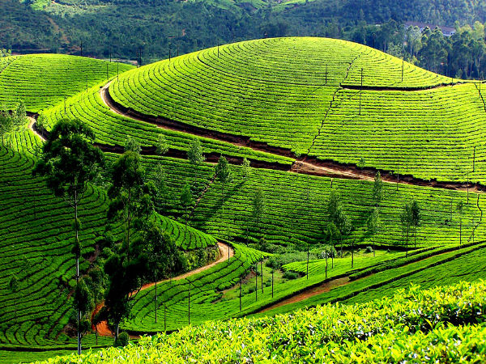
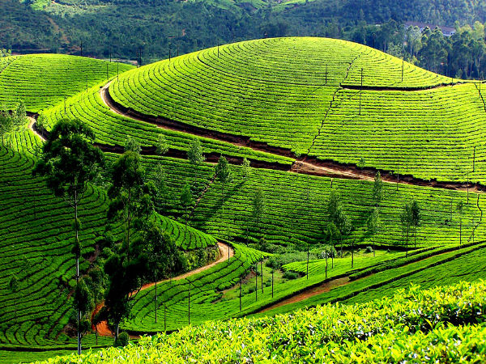
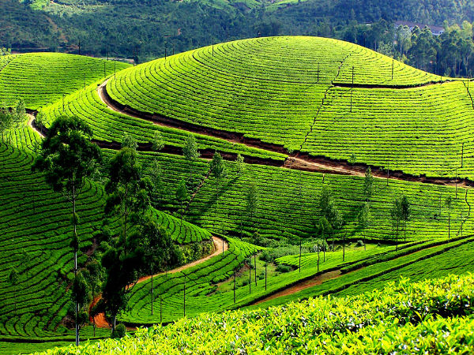

TOP DESTINATIONS

 

Idukki is the second largest district in area but has the lowest population density. Idukki has a vast forest reserve area; more than a half of the district is covered by forests.
Idukki is a district in the Indian state of Kerala.[1] It was constituted on 26 January 1972, by splitting the district of Kottayam into two parts. Its division was earlier headquartered at Kottayam city, but moved to Painavu in June 1976. Idukki district lies amid the Western Ghats of Kerala. Though it is regarded as the second-largest district in the region, it has the lowest population density among the districts of Kerala,[2] the urban population being higher than the rural. Idukki is rich in forests and also known as the "Spice Garden of Kerala".
